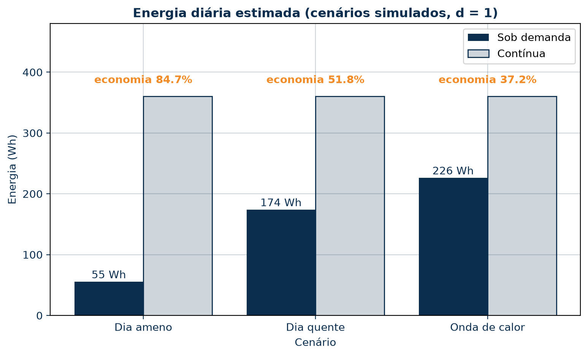
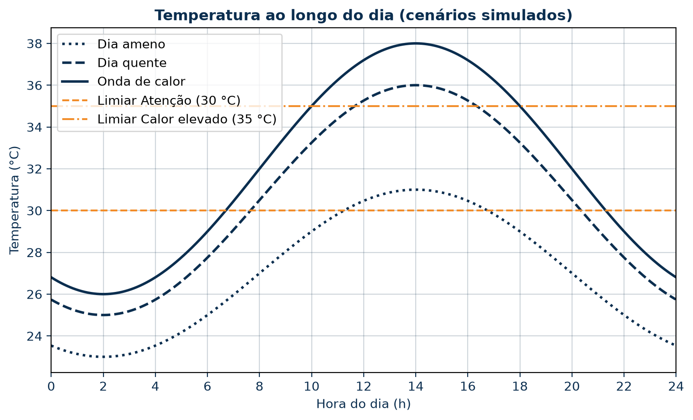

Economia energética estimada
RESULTADOS DAS SIMULAÇÕES
O que as simulações mostram?
A modelagem matemática do Ponto Fresco permitiu analisar diferentes cenários de temperatura e estimar o consumo energético da ventilação.
Economia energética estimada
Economia energética estimada
Consumo energético estimado
O gráfico compara o consumo da ventilação sob demanda com o funcionamento contínuo nos três cenários simulados.

Temperatura ao longo do dia
A modelagem também permitiu representar a variação da temperatura durante 24 horas em três cenários.

E os pontos de ônibus?
Além dos cenários matemáticos, utilizamos Python para analisar dados simulados de três pontos de ônibus da Zona Norte do Rio de Janeiro.
A comparação permite visualizar indicadores de temperatura e um índice experimental de prioridade para melhorias.
Conhecer os pontos analisadosTodos os resultados são experimentais e baseados em simulações. Não representam medições ambientais reais nem comprovam redução de temperatura em abrigos físicos.